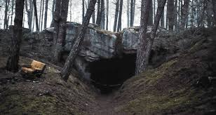

Você é um personagem que se vê preso em uma pequena cidade durante a noite de Devil’s Night, uma noite de celebração de Halloween cheia de rituais, segredos e perigos. O objetivo é descobrir a verdade por trás de eventos misteriosos e sobreviver até o amanhecer. Escolha do Personagem:
Investigador: Hábil em resolver mistérios e enigmas.
Cidadão Local: Conhece bem a cidade e seus segredos.
Forasteiro: Menos familiar com a cidade, mas com habilidades únicas.
Você chega à cidade para um evento de Halloween, mas logo percebe que algo estranho está acontecendo. A cidade parece vazia e os poucos que encontram são evasivos.
Explorar a Cidade: Investigar diferentes áreas como o antigo cemitério, a mansão abandonada ou a biblioteca local.
Procurar Ajuda: Tentar encontrar alguém que possa explicar o que está acontecendo ou pedir ajuda à polícia..
Eventos e Desafios: escolha para qual lugar você deseja ir, mas saiba que tudo depende de você. A sua escolha pode mudar tudo
Enigma do Cemitério: Resolver quebra-cabeças para descobrir pistas sobre rituais antigos.
Mistério da Mansão: Explorar a mansão e desvendar segredos, enfrentando desafios e possíveis perigos sobrenaturais.
Segredos da Biblioteca: Buscar livros e documentos que possam conter informações cruciais sobre a noite.
Interações: escolha bem com quem conversar
NPCs: Conversar com personagens como o prefeito, um misterioso excêntrico ou uma bruxa local, que podem fornecer informações ou criar mais confusão.
Reações: Suas ações e escolhas afetam como os NPCs reagem a você, podendo ajudar ou dificultar sua investigação.
Desenvolvimento da História
Descoberta: Cada área e interação revela pedaços de uma história maior, envolvendo rituais antigos, uma seita secreta, ou um evento sobrenatural específico da noite.
Compromissos: Fazer escolhas morais que podem influenciar o desfecho do jogo, como decidir ajudar um personagem ou agir em benefício próprio.
Desenvolvimento da História
Descoberta: Cada área e interação revela pedaços de uma história maior, envolvendo rituais antigos, uma seita secreta, ou um evento sobrenatural específico da noite.
Compromissos: Fazer escolhas morais que podem influenciar o desfecho do jogo, como decidir ajudar um personagem ou agir em benefício próprio.
Clímax
Revelação Final: Descobrir a verdade por trás do que está acontecendo, que pode envolver um confronto com uma força sobrenatural, uma seita secreta ou uma conspiração local.
Decisão Final: Tomar uma decisão crucial que pode levar a diferentes finais.
Finais
Sobrevivência: Conseguir escapar da cidade com sucesso.
Revelação: Expor a verdade para o mundo, mas com possíveis consequências.
Perdição: Ser derrotado pelos eventos sobrenaturais ou pelas forças ocultas da cidade.